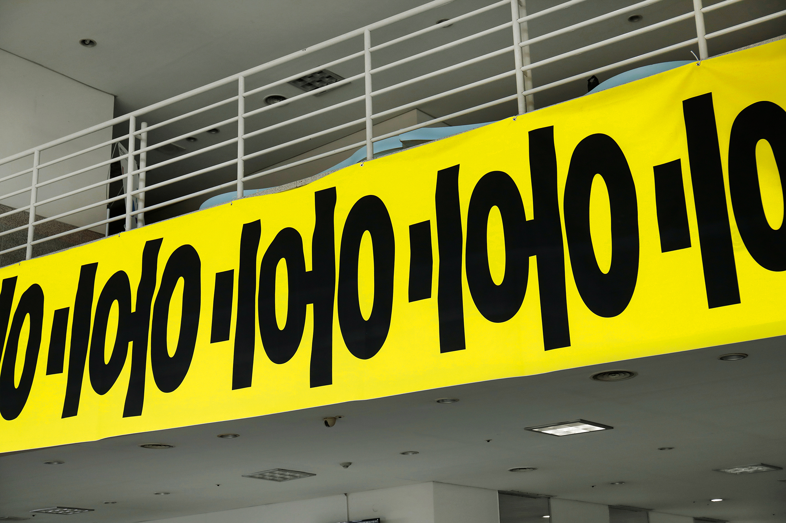
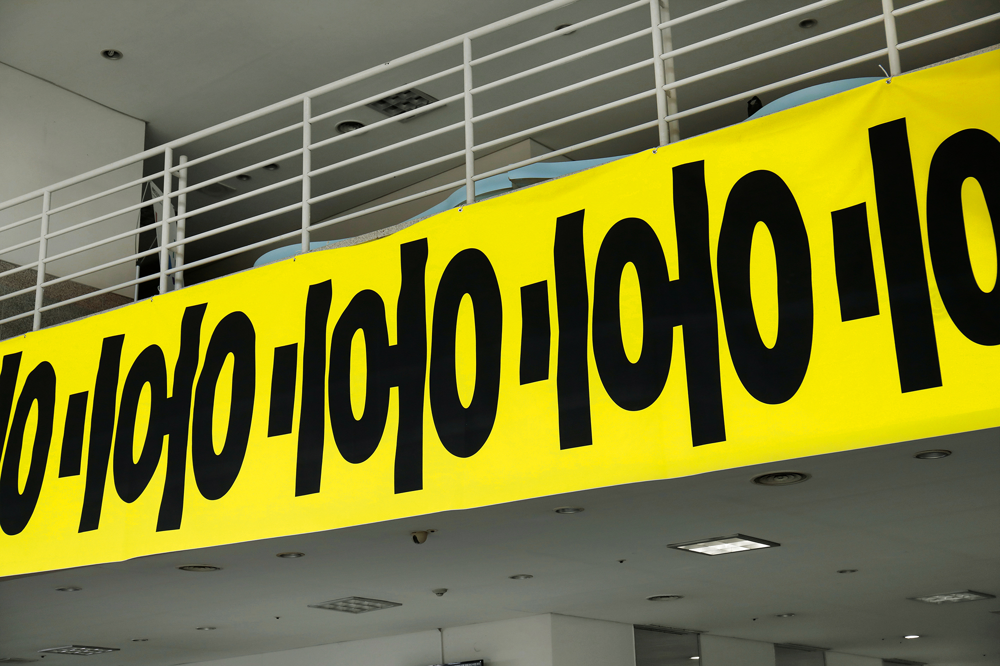
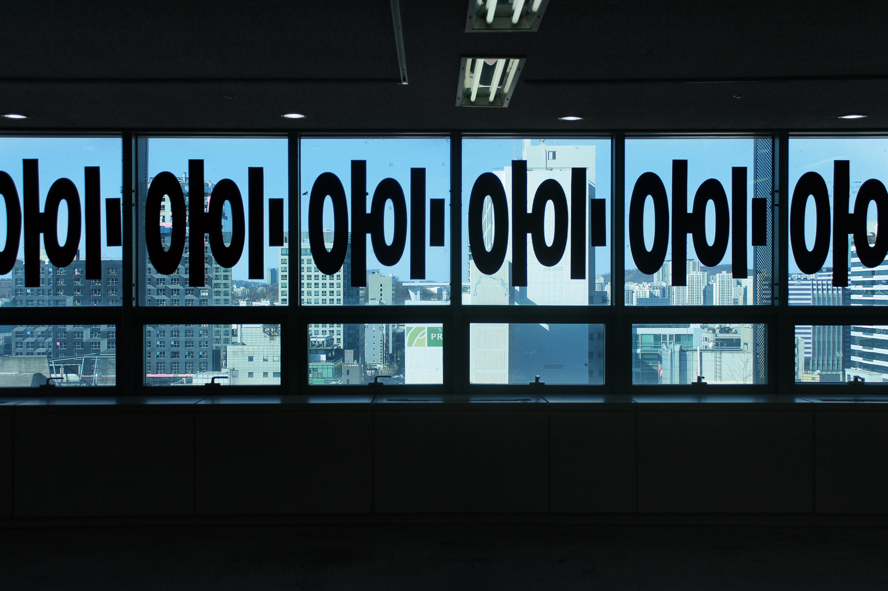
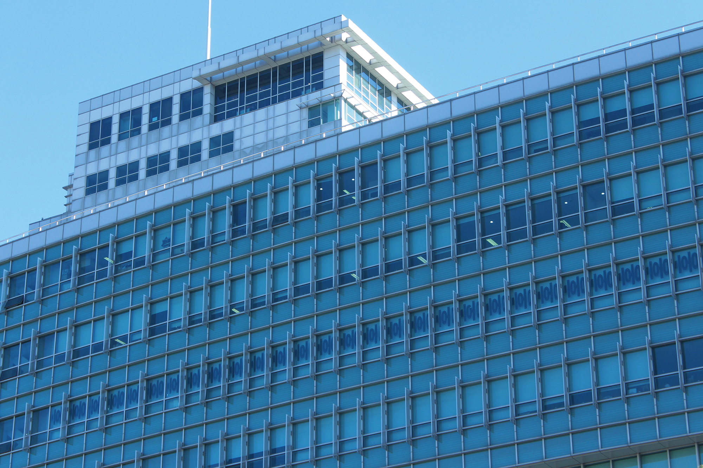
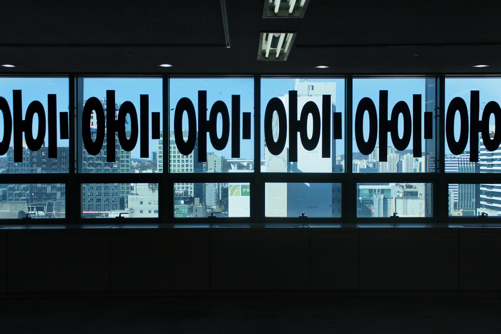
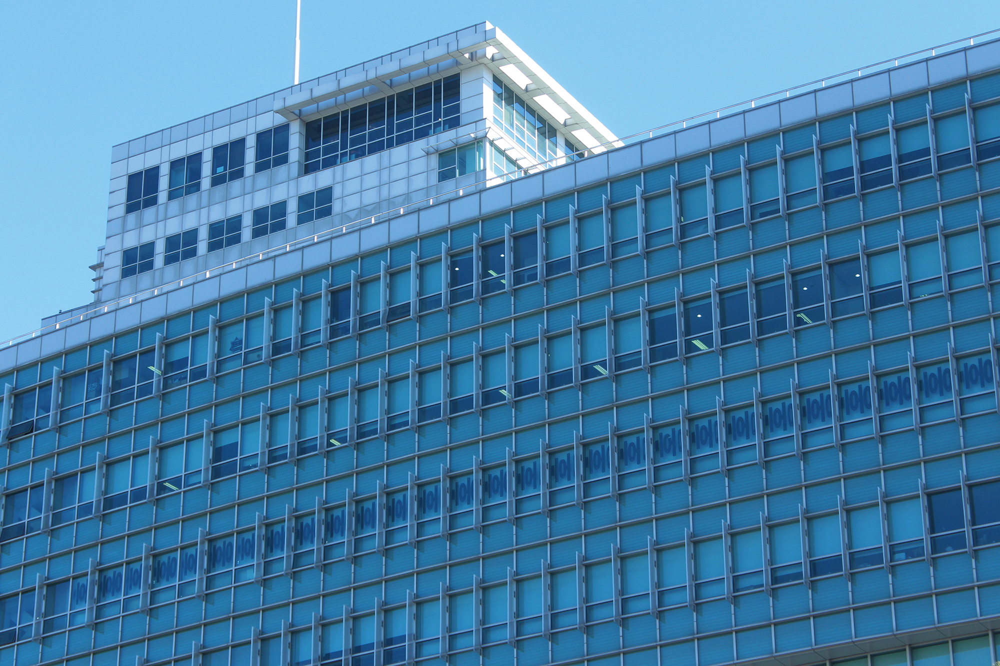

졸업 주간은 홍익대학교 시각디자인과
4학년 학생들의 졸업을 맞이하여
학과의 구성원인 1– 4학년 재학생,
졸업생 그리고 교수님이 교류하고
네트워크를 만들어가는 기간이다.
4학년 학생들은 4년간 생활한
실기실에서 반별로 졸업 전시를
기획해 열고 전시와 연계된
프로그램을 진행한다.
이 외에도
과 내 소모임에서 기획한 워크숍,
졸업생과 재학생이 만나는 이음다리,
학과교수님들의 강연 등 다채로운
프로그램이 진행된다.
졸업 주간을 통해 다양한 생각과
경험이 만들어지고 교차하기를
바란다.
2017 홍익대학교 시각디자인과
졸업준비위원회
The Graduation Week is an
event where all members
of Hongik University Visual
Communication Design
(HIVCD) ― freshmen
to seniors, alumni, and
faculty members ― can be
connected, build networks
through celebrating the
graduation of senior HIVCD
students.
Graduation exhibitions
are held in each studio room
where the senior students
have been studying for 4
years, combined with related
programs. In addition to
this, there are other various
programs such as workshops
organized by student clubs,
Ieumdari (a meeting session
of alumni and students),
and lectures of the faculty
members.
Through graduation week,
we hope that various ideas
and experiences will be
created and crossed.
Hongik University
Visual Communication Design
Graduation Preparatory
Committee 2017
 

 


